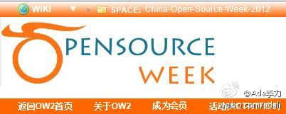

催稿了：@家常咖啡 甲骨文用户组经验； Cedric Thomas：国际社区发展会议介绍; @李佳宸-开发者社区联盟 社区商业化之路。这个社区发展论坛目前变更为五个演讲。@Ada李力:开源社区日 的社区论坛演讲稿又完成一个 @LukeFan 范路 《开发者与开发者社区》 网页链接 这个slide估计半个小时讲不完，而且他说，看了我的《社区运营十问》 网页链接 觉得他和我能够好好的干一仗，肯定有些观点是激烈冲突的。 网页链接 